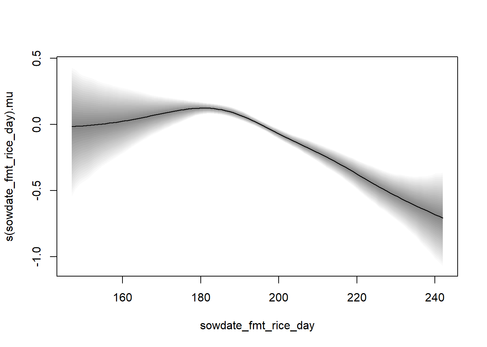
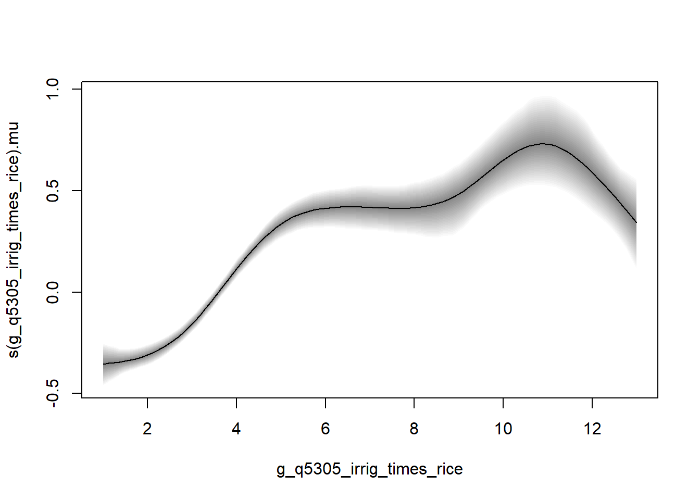
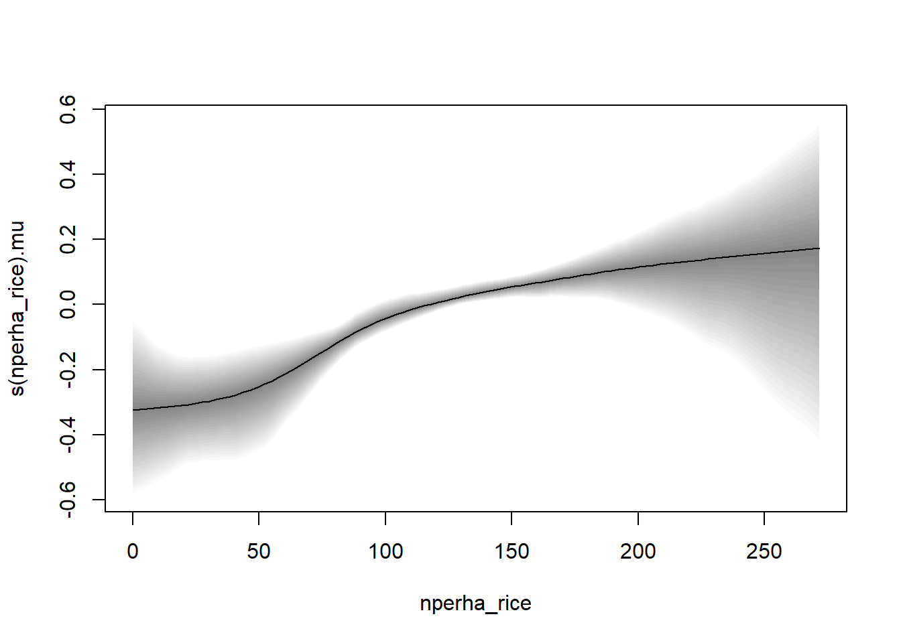
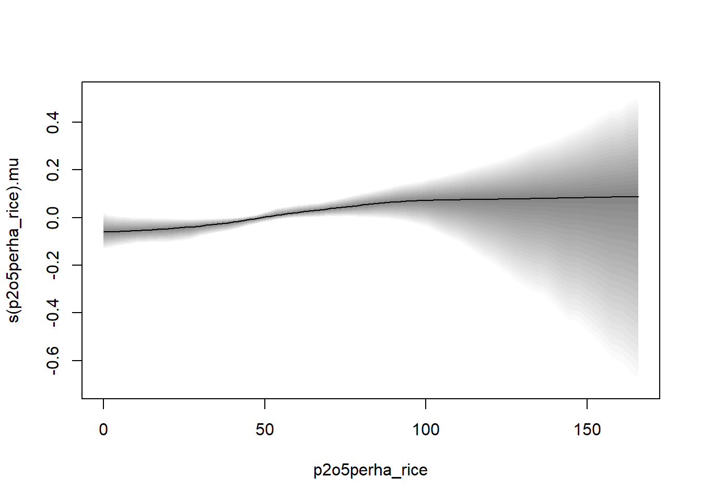

library(sp)
library(mgcv)Loading required package: nlmeThis is mgcv 1.9-1. For overview type 'help("mgcv-package")'.library(bamlss)Loading required package: codaLoading required package: colorspaceLoading required package: distributions3
Attaching package: 'distributions3'The following object is masked from 'package:stats':
GammaThe following object is masked from 'package:grDevices':
pdf-For citation info, use citation("bamlss") and see http://www.bamlss.org/.
Attaching package: 'bamlss'The following object is masked from 'package:mgcv':
smooth.construct# Multivariate geoadditive model
# remotes::install_git("https://git.uibk.ac.at/c4031039/mvnchol")
# library(mvnchol)
library(BayesX)Loading required package: shapefilesLoading required package: foreign
Attaching package: 'shapefiles'The following objects are masked from 'package:foreign':
read.dbf, write.dbflibrary(R2BayesX)Loading required package: BayesXsrcRegistered S3 method overwritten by 'R2BayesX':
method from
plot.bnd bamlss
Attaching package: 'R2BayesX'The following objects are masked from 'package:BayesX':
add.neighbor, bnd2gra, bnd2sp, delete.neighbor, drawmap,
get.neighbor, gra2nb, nb2gra, plotnonp, plotsurf, read.bnd,
read.gra, shp2bnd, sp2bnd, write.bnd, write.graThe following objects are masked from 'package:bamlss':
colorlegend, DIC, plot2d, plot3d, plotblock, plotmap, samples,
sliceplot, sxlibrary(sf)Linking to GEOS 3.11.2, GDAL 3.8.2, PROJ 9.3.1; sf_use_s2() is TRUElibrary(spdep)Loading required package: spDataTo access larger datasets in this package, install the spDataLarge
package with: `install.packages('spDataLarge',
repos='https://nowosad.github.io/drat/', type='source')`library(rio)
Irrig_Rev_rice_wheat <- import("Irrig_Rev_rice_wheat.csv")
shpname <- file.path(getwd(), "shp", "India_aoi_sf_sp")
India_aoi_sp_bnd <- BayesX::shp2bnd(shpname = shpname, regionnames = "District", check.is.in = F)Reading map ... finished
Note: map consists originally of 50 polygons
Note: map consists of 47 regionsf_rice_yield_MRF <- list(
b_grain_yield_ton_per_ha_rice ~ 1 + rice_duration_class_long + s(sowdate_fmt_rice_day) + s(g_q5305_irrig_times_rice) + s(nperha_rice) + s(p2o5perha_rice) + s(District, bs = "mrf", xt = list("penalty" = K)) +
s(District, bs = "re"),
sigma ~ 1 + rice_duration_class_long + s(sowdate_fmt_rice_day) + s(g_q5305_irrig_times_rice) + s(nperha_rice) + s(p2o5perha_rice) + s(District, bs = "mrf", xt = list("penalty" = K)) +
s(District, bs = "re")
)
K <- neighbormatrix(India_aoi_sp_bnd)
head(K) Araria Arwal Aurangabad Banka Begusarai Bhagalpur Arah Buxar
Araria 4 0 0 0 0 0 0 0
Arwal 0 6 -1 0 0 0 -1 0
Aurangabad 0 -1 3 0 0 0 0 0
Banka 0 0 0 3 0 -1 0 0
Begusarai 0 0 0 0 5 0 0 0
Bhagalpur 0 0 0 -1 0 6 0 0
Darbhanga Gaya Gopalganj Jamui Jehanabad Kaimur Katihar Khagaria
Araria 0 0 0 0 0 0 0 0
Arwal 0 -1 0 0 -1 0 0 0
Aurangabad 0 -1 0 0 0 0 0 0
Banka 0 0 0 -1 0 0 0 0
Begusarai 0 0 0 0 0 0 0 -1
Bhagalpur 0 0 0 0 0 0 -1 -1
Kishanganj Lakhisarai Madhepura Madhubani Munger Muzaffarpur Nalanda
Araria -1 0 -1 0 0 0 0
Arwal 0 0 0 0 0 0 0
Aurangabad 0 0 0 0 0 0 0
Banka 0 0 0 0 -1 0 0
Begusarai 0 -1 0 0 -1 0 0
Bhagalpur 0 0 -1 0 -1 0 0
Nawada WestChamparan Patna EastChamparan Purnia Rohtas Saharsa
Araria 0 0 0 0 -1 0 0
Arwal 0 0 -1 0 0 -1 0
Aurangabad 0 0 0 0 0 -1 0
Banka 0 0 0 0 0 0 0
Begusarai 0 0 -1 0 0 0 0
Bhagalpur 0 0 0 0 -1 0 0
Samastipur Saran Sheikhpura Sheohar Sitamarhi Siwan Supaul Vaishali
Araria 0 0 0 0 0 0 -1 0
Arwal 0 0 0 0 0 0 0 0
Aurangabad 0 0 0 0 0 0 0 0
Banka 0 0 0 0 0 0 0 0
Begusarai -1 0 0 0 0 0 0 0
Bhagalpur 0 0 0 0 0 0 0 0
Balia Chandauli Deoria Gazipur Gorakhpur Kushinagar Maharajganj Mau
Araria 0 0 0 0 0 0 0 0
Arwal 0 0 0 0 0 0 0 0
Aurangabad 0 0 0 0 0 0 0 0
Banka 0 0 0 0 0 0 0 0
Begusarai 0 0 0 0 0 0 0 0
Bhagalpur 0 0 0 0 0 0 0 0
Siddharthnagar
Araria 0
Arwal 0
Aurangabad 0
Banka 0
Begusarai 0
Bhagalpur 0## Also need to transform to factor for
## setting up the MRF smooth.
Irrig_Rev_rice_wheat$District <- as.factor(Irrig_Rev_rice_wheat$a_q103_district)
## Now note that not all regions are observed,
## therefore we need to remove those regions
## from the penalty matrix
rn <- rownames(K)
lv <- levels(Irrig_Rev_rice_wheat$District)
i <- rn %in% lv
K <- K[i, i]
set.seed(321)
b_rice_yield_MRF <- bamlss(f_rice_yield_MRF, data = Irrig_Rev_rice_wheat, family = "gaussian")AICc 12433.92 logPost -6219.26 logLik -6063.08 edf 148.79 eps 2.3399 iteration 1
AICc 12239.92 logPost -5912.80 logLik -5967.69 edf 147.28 eps 0.4613 iteration 2
AICc 12211.69 logPost -5886.53 logLik -5956.93 edf 144.14 eps 0.1461 iteration 3
AICc 12205.11 logPost -5885.22 logLik -5953.35 edf 144.42 eps 3.3052 iteration 4
AICc 12203.12 logPost -5884.97 logLik -5952.28 edf 144.48 eps 0.0430 iteration 5
AICc 12202.50 logPost -5884.95 logLik -5951.95 edf 144.50 eps 0.0113 iteration 6
AICc 12202.32 logPost -5884.97 logLik -5951.84 edf 144.52 eps 0.0088 iteration 7
AICc 12202.28 logPost -5884.95 logLik -5951.82 edf 144.52 eps 0.0010 iteration 8
AICc 12202.27 logPost -5884.95 logLik -5951.81 edf 144.53 eps 0.0002 iteration 9
AICc 12202.27 logPost -5884.95 logLik -5951.81 edf 144.53 eps 0.0001 iteration 10
AICc 12202.27 logPost -5884.95 logLik -5951.81 edf 144.53 eps 0.0001 iteration 11
AICc 12202.26 logPost -5884.95 logLik -5951.80 edf 144.53 eps 0.0000 iteration 12
AICc 12202.26 logPost -5884.95 logLik -5951.80 edf 144.53 eps 0.0000 iteration 12
elapsed time: 9.61sec
Starting the sampler...
| | 0% 6.07min
|* | 5% 4.23min 13.36sec
|** | 10% 2.95min 19.68sec
|*** | 15% 2.27min 24.04sec
|**** | 20% 1.94min 29.04sec
|***** | 25% 1.86min 37.26sec
|****** | 30% 1.80min 46.37sec
|******* | 35% 1.65min 53.34sec
|******** | 40% 1.48min 59.09sec
|********* | 45% 1.34min 1.09min
|********** | 50% 1.31min 1.31min
|*********** | 55% 1.21min 1.48min
|************ | 60% 1.05min 1.58min
|************* | 65% 53.58sec 1.66min
|************** | 70% 44.67sec 1.74min
|*************** | 75% 36.43sec 1.82min
|**************** | 80% 28.43sec 1.90min
|***************** | 85% 20.87sec 1.97min
|****************** | 90% 13.65sec 2.05min
|******************* | 95% 7.02sec 2.22min
|********************| 100% 0.00sec 2.39min## First, note that we have the structured id = 'mrf1' and unstructured
## spatial effect id = 're2', also indicated in the model summary
summary(b_rice_yield_MRF)
Call:
bamlss(formula = f_rice_yield_MRF, family = "gaussian", data = Irrig_Rev_rice_wheat)
---
Family: gaussian
Link function: mu = identity, sigma = log
*---
Formula mu:
---
b_grain_yield_ton_per_ha_rice ~ 1 + rice_duration_class_long +
s(sowdate_fmt_rice_day) + s(g_q5305_irrig_times_rice) + s(nperha_rice) +
s(p2o5perha_rice) + s(District, bs = "mrf", xt = list(penalty = K)) +
s(District, bs = "re")
-
Parametric coefficients:
Mean 2.5% 50% 97.5% parameters
(Intercept) 1.91314 0.53852 1.65079 3.75969 0.013
rice_duration_class_long 0.07470 0.01193 0.07425 0.13826 0.075
-
Acceptance probability:
Mean 2.5% 50% 97.5%
alpha 1 1 1 1
-
Smooth terms:
Mean 2.5% 50% 97.5%
s(sowdate_fmt_rice_day).tau21 5.552e-01 1.446e-02 3.045e-01 2.356e+00
s(sowdate_fmt_rice_day).alpha 1.000e+00 1.000e+00 1.000e+00 1.000e+00
s(sowdate_fmt_rice_day).edf 3.794e+00 1.621e+00 3.720e+00 5.888e+00
s(g_q5305_irrig_times_rice).tau21 2.810e+00 3.602e-01 1.981e+00 1.025e+01
s(g_q5305_irrig_times_rice).alpha 1.000e+00 1.000e+00 1.000e+00 1.000e+00
s(g_q5305_irrig_times_rice).edf 6.431e+00 4.673e+00 6.475e+00 7.926e+00
s(nperha_rice).tau21 3.890e-01 1.397e-04 6.752e-02 2.931e+00
s(nperha_rice).alpha 1.000e+00 1.000e+00 1.000e+00 1.000e+00
s(nperha_rice).edf 2.861e+00 1.009e+00 2.471e+00 6.332e+00
s(p2o5perha_rice).tau21 9.008e-02 8.489e-05 6.828e-03 8.159e-01
s(p2o5perha_rice).alpha 1.000e+00 1.000e+00 1.000e+00 1.000e+00
s(p2o5perha_rice).edf 1.870e+00 1.007e+00 1.389e+00 4.649e+00
s(District,id='mrf1').tau21 3.990e-02 7.448e-05 1.012e-02 1.928e-01
s(District,id='mrf1').alpha 1.000e+00 1.000e+00 1.000e+00 1.000e+00
s(District,id='mrf1').edf 2.234e+01 1.959e+00 2.819e+01 3.405e+01
s(District,id='re2').tau21 5.635e+00 2.028e-01 5.290e+00 1.497e+01
s(District,id='re2').alpha 1.000e+00 1.000e+00 1.000e+00 1.000e+00
s(District,id='re2').edf 3.559e+01 3.390e+01 3.581e+01 3.594e+01
parameters
s(sowdate_fmt_rice_day).tau21 0.182
s(sowdate_fmt_rice_day).alpha NA
s(sowdate_fmt_rice_day).edf 3.291
s(g_q5305_irrig_times_rice).tau21 3.723
s(g_q5305_irrig_times_rice).alpha NA
s(g_q5305_irrig_times_rice).edf 7.106
s(nperha_rice).tau21 1.398
s(nperha_rice).alpha NA
s(nperha_rice).edf 5.489
s(p2o5perha_rice).tau21 0.018
s(p2o5perha_rice).alpha NA
s(p2o5perha_rice).edf 1.787
s(District,id='mrf1').tau21 0.029
s(District,id='mrf1').alpha NA
s(District,id='mrf1').edf 31.761
s(District,id='re2').tau21 12.212
s(District,id='re2').alpha NA
s(District,id='re2').edf 35.917
---
Formula sigma:
---
sigma ~ 1 + rice_duration_class_long + s(sowdate_fmt_rice_day) +
s(g_q5305_irrig_times_rice) + s(nperha_rice) + s(p2o5perha_rice) +
s(District, bs = "mrf", xt = list(penalty = K)) + s(District,
bs = "re")
-
Parametric coefficients:
Mean 2.5% 50% 97.5% parameters
(Intercept) -0.122030 -0.179478 -0.122416 -0.066361 -0.114
rice_duration_class_long 0.062283 0.009367 0.061563 0.116739 0.060
-
Acceptance probability:
Mean 2.5% 50% 97.5%
alpha 0.9859 0.8901 1.0000 1
-
Smooth terms:
Mean 2.5% 50% 97.5%
s(sowdate_fmt_rice_day).tau21 2.127e-02 9.513e-05 4.298e-03 1.617e-01
s(sowdate_fmt_rice_day).alpha 9.774e-01 8.265e-01 9.996e-01 1.000e+00
s(sowdate_fmt_rice_day).edf 1.604e+00 1.009e+00 1.337e+00 3.522e+00
s(g_q5305_irrig_times_rice).tau21 2.974e-01 2.097e-04 1.473e-01 1.241e+00
s(g_q5305_irrig_times_rice).alpha 9.369e-01 6.147e-01 9.946e-01 1.000e+00
s(g_q5305_irrig_times_rice).edf 4.091e+00 1.081e+00 4.256e+00 6.466e+00
s(nperha_rice).tau21 1.769e-01 4.136e-04 3.171e-02 1.268e+00
s(nperha_rice).alpha 9.539e-01 6.534e-01 9.980e-01 1.000e+00
s(nperha_rice).edf 2.652e+00 1.043e+00 2.327e+00 5.980e+00
s(p2o5perha_rice).tau21 3.559e-01 1.656e-04 2.100e-02 2.839e+00
s(p2o5perha_rice).alpha 9.487e-01 5.748e-01 9.987e-01 1.000e+00
s(p2o5perha_rice).edf 2.693e+00 1.020e+00 2.093e+00 6.538e+00
s(District,id='mrf1').tau21 3.139e-03 8.975e-05 2.615e-03 9.227e-03
s(District,id='mrf1').alpha 7.852e-01 2.278e-01 8.831e-01 1.000e+00
s(District,id='mrf1').edf 2.159e+01 3.408e+00 2.357e+01 2.997e+01
s(District,id='re2').tau21 1.943e-02 1.640e-03 1.852e-02 4.396e-02
s(District,id='re2').alpha 7.503e-01 1.686e-01 8.422e-01 1.000e+00
s(District,id='re2').edf 2.694e+01 1.002e+01 2.848e+01 3.195e+01
parameters
s(sowdate_fmt_rice_day).tau21 0.014
s(sowdate_fmt_rice_day).alpha NA
s(sowdate_fmt_rice_day).edf 1.802
s(g_q5305_irrig_times_rice).tau21 0.246
s(g_q5305_irrig_times_rice).alpha NA
s(g_q5305_irrig_times_rice).edf 4.768
s(nperha_rice).tau21 0.091
s(nperha_rice).alpha NA
s(nperha_rice).edf 3.139
s(p2o5perha_rice).tau21 2.253
s(p2o5perha_rice).alpha NA
s(p2o5perha_rice).edf 6.288
s(District,id='mrf1').tau21 0.007
s(District,id='mrf1').alpha NA
s(District,id='mrf1').edf 28.648
s(District,id='re2').tau21 0.002
s(District,id='re2').alpha NA
s(District,id='re2').edf 10.540
---
Sampler summary:
-
DIC = 12122.94 logLik = -6011.789 pd = 99.3659
runtime = 146.36
---
Optimizer summary:
-
AICc = 12202.27 edf = 144.5353 logLik = -5951.809
logPost = -5884.958 nobs = 4537 runtime = 9.61# Plot the nonlinear effect
plot(b_rice_yield_MRF, model = "mu", term = "s(sowdate_fmt_rice_day)")
plot(b_rice_yield_MRF, model = "mu", term = "s(g_q5305_irrig_times_rice)")
plot(b_rice_yield_MRF, model = "mu", term = "s(nperha_rice)")
plot(b_rice_yield_MRF, model = "mu", term = "s(p2o5perha_rice)")